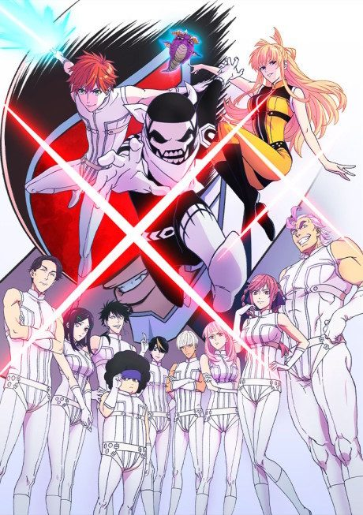
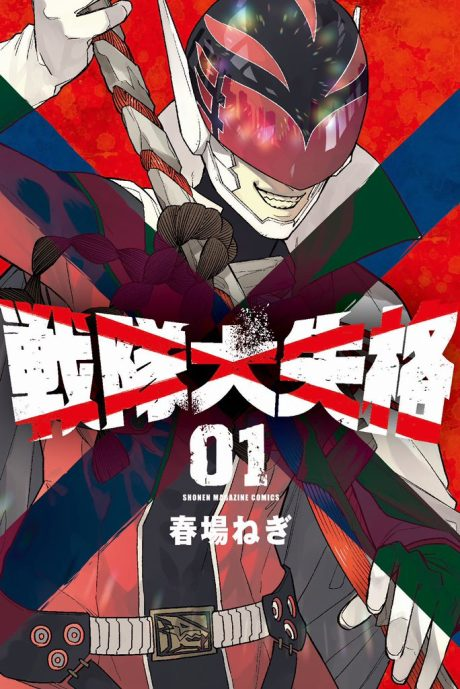

Manga continues fromCh. 125 Anime
MangaGo! Go! Loser Ranger!
戦隊大失格
AniList7.2
Animeter—
2 seasons24 ep
MangaCh. 125
Anime finished. Where does the manga pick up?
Start at Chapter125
Season 2 ends at chapter 124, so start at chapter 125. The manga is still ongoing.
1124ongoing
Season 2Start reading here